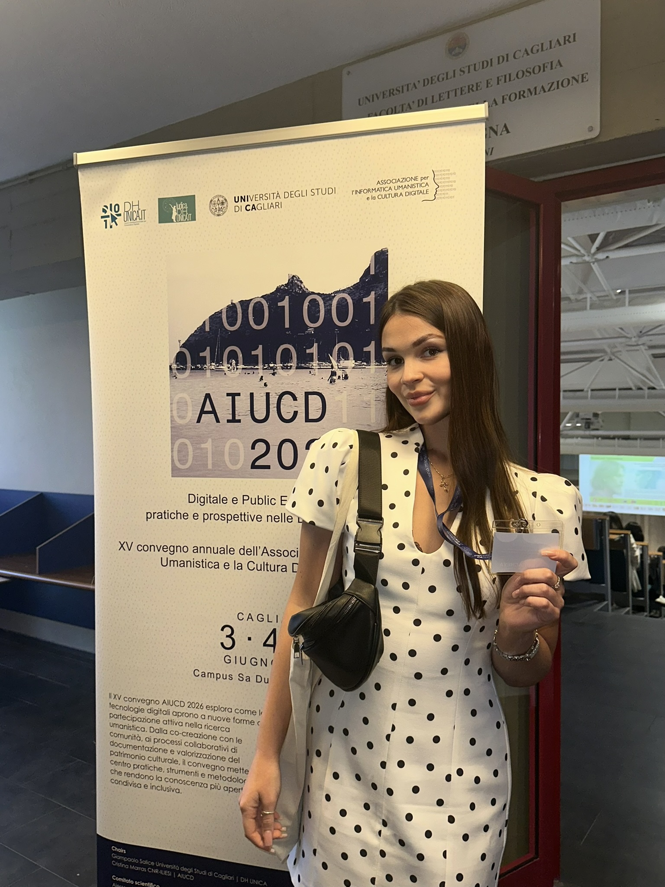
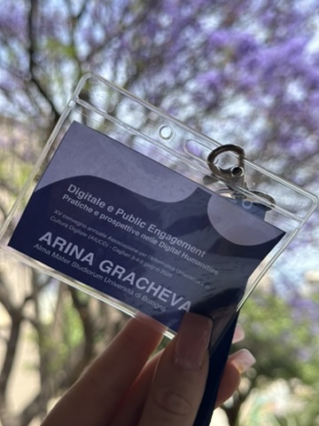
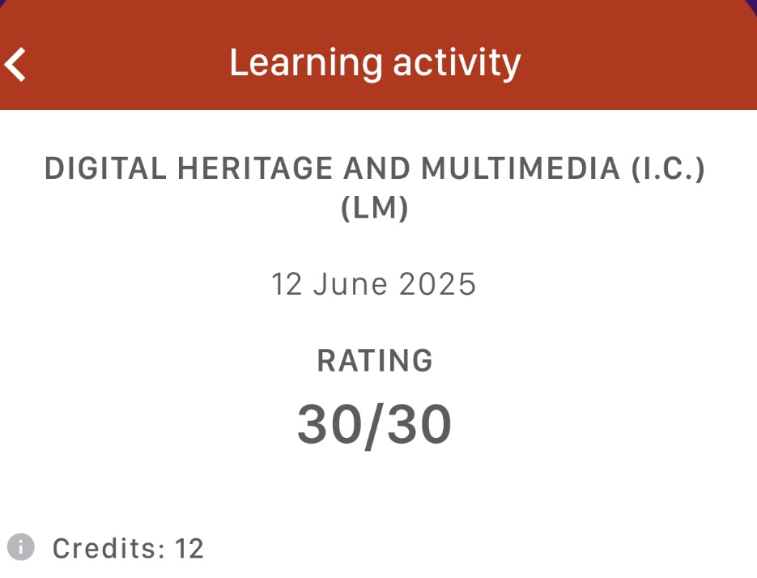

до повышения до Lead Key Account Manager
Senior Sales Specialist · International B2B Sales
Arina Gracheva
Key Account Manager с опытом международных B2B-продаж, enterprise-переговоров на английском языке и работы со стратегическими клиентами уровня Shell, BP, Saudi Aramco и ENI.
крупнейшая сделка проекта: Diamond Sponsorship
английский язык, TOEFL, переговоры и презентации
Master's Degree, University of Bologna
Executive Summary
Международные B2B-продажи, стратегические аккаунты и executive-коммуникация
Sales-профессионал с опытом полного цикла продаж: prospecting, qualification, consultative selling, negotiation, closing, relationship management, upselling и cross-selling. Работала с международными клиентами и руководителями уровня CEO, CTO, General Manager и Business Development Director, проводя переговоры полностью на английском языке.
Сочетает коммерческий опыт в B2B и EdTech с академической базой в digital products, UX, analytics, NLP, data analysis, project management и педагогической подготовкой. База в психологии и методике обучения помогает точнее выявлять мотивацию клиента, объяснять сложные продукты и выстраивать доверительную коммуникацию. Готова к роли Senior Sales Specialist в международной SaaS-команде. Член ICOM, международной профессиональной сети в сфере культуры и музеев, связанной с UNESCO.
Core Competencies
Ключевые компетенции
Professional Experience
Профессиональный опыт
BGS Group
Lead Key Account Manager / Key Account Manager · Mar 2024-Aug 2026
- Управляла полным циклом международных B2B-продаж: prospecting, qualification, consultative selling, negotiation, closing, relationship management и account growth.
- Получила повышение до Lead Key Account Manager через 3 месяца благодаря коммерческим результатам, самостоятельности и работе с high-value accounts.
- Закрыла крупнейшую сделку проекта: £22,000 Diamond Sponsorship.
- Вела переговоры с CEO, CTO, General Managers и Business Development Directors международных компаний.
- Развивала отношения со стратегическими аккаунтами, включая Shell, BP, Saudi Aramco, ENI, LNG-компании и глобальные энергетические корпорации.
- Проводила переговоры, презентации и деловую переписку полностью на английском языке.
- Системно превышала KPI за счет приоритизации перспективных opportunities, точного follow-up и управления pipeline.
- Выявляла бизнес-потребности клиентов, работала со stakeholder mapping и предлагала релевантные sponsorship и partnership solutions.
- Увеличивала ценность аккаунтов через cross-selling, upselling и долгосрочное развитие отношений.
- Вела CRM, фиксировала стадии сделок, историю коммуникаций, follow-up и статус opportunities.
- Представляла компанию на международных конгрессах, выстраивая отношения с senior stakeholders и находя новые коммерческие возможности.
- Участвовала в организации LNG Congress и AUTOA Plus, совмещая sales execution, event strategy и клиентскую коммуникацию.
Skyeng
Sales Manager · Mar 2021-Oct 2023
- Входила в число top sales performers в высококонкурентной sales-среде.
- Выигрывала премиальные sales competitions благодаря перевыполнению целей и сильной conversion performance.
- Продавала subscription-based education products через needs discovery, objection handling и value-based positioning.
- Находила общий язык с разными типами клиентов, включая тех, кто изначально не верил, что сможет начать изучать английский язык.
- Переводила сомнения клиента в мотивацию к покупке через эмпатию, точную диагностику барьеров и понятное объяснение ценности продукта.
- Наставляла новых сотрудников по sales techniques, product knowledge и стандартам клиентской коммуникации.
- Участвовала в запуске новых subscription products, тестируя sales messaging и собирая customer feedback.
- Повышала конверсию через точную диагностику потребностей, персонализированные рекомендации и системный follow-up.
Netology
Sales Manager · 2021
- Проводила consultative sales conversations, выявляя цели, барьеры и decision criteria клиентов.
- Управляла CRM pipeline: lead tracking, follow-ups, deal stages и conversion opportunities.
- Проводила продуктовые презентации с фокусом на потребности клиента, value proposition и ожидаемый результат.
- Квалифицировала inbound и outbound opportunities по мотивации, fit и готовности к покупке.
- Поддерживала pipeline discipline для регулярного follow-up и предсказуемой sales activity.
- Выстраивала доверие через clear communication, needs-based recommendations и профессиональную работу с возражениями.
Education
Образование
University of Bologna
Master's Degree — Digital Humanities and Digital Knowledge · Italy · 2026
- Завершила full-time международную магистерскую программу на английском языке.
- Изучала digital products, UX, analytics, NLP, data analysis и project management.
- Была отобрана для участия в международной Digital Humanities conference в Сардинии за высокую академическую успеваемость.
- Развила cross-cultural communication skills в международной English-speaking academic environment.
МПГУ, Москва
Бакалавриат — учитель информатики
- Получила педагогическую базу в области информатики, методики обучения и структурного объяснения сложных технических тем.
- Изучила около 12 курсов по психологии за 5 лет обучения, включая темы мотивации, восприятия, коммуникации и возрастных особенностей.
- Перенесла педагогические навыки в продажи: активное слушание, диагностика потребностей, адаптация объяснения под уровень собеседника и работа с сопротивлением.
- Развила навык публичного выступления, ясной презентации материала и удержания внимания аудитории.
ICOM
Членство в международной профессиональной сети, связанной с UNESCO
- Поддерживает международный профессиональный контекст, cultural awareness и понимание коммуникации между разными аудиториями.
Languages
- English
- C1, TOEFL · Negotiations, presentations, client communication
- German
- B1
- Italian
- A2+
- Russian
- Native
Technical Skills
Role Fit
Соответствие роли Senior Sales Specialist
Senior sales professional с международным B2B-бэкграундом, опытом стратегических аккаунтов и executive-переговоров на английском языке. Сильный профиль для международных SaaS- и EdTech-продаж благодаря сочетанию consultative selling, CRM pipeline management, digital product literacy и способности работать с международными клиентами.
Enterprise-ready
Опыт переговоров с CEO, CTO, General Managers и Business Development Directors.
SaaS-ready
Понимание digital products, UX, analytics и subscription-based sales.
Global communication
Английский C1, TOEFL, full-time обучение в Италии и переговоры с клиентами из разных регионов.
Commercial impact
Повышение за 3 месяца, перевыполнение KPI и крупнейшая сделка проекта.
Territory flexibility
Работала по локальному времени территории продаж: проводила переговоры с Китаем в 6:00 и с США в 23:00.
Travel-ready
Готова к зарубежным командировкам; имеет сильную визовую историю и опыт получения ВНЖ.
Selected Achievements
Галерея достижений
Международная академическая среда, обучение в Италии, конференции по Digital Humanities и опыт работы с B2B-проектами.

Digital Humanities · Sardinia
Международная конференция в Кальяри
Была приглашена к участию в Digital Humanities conference на Сардинии за сильные академические результаты, высокую учебную нагрузку и успеваемость.

AIUCD 2026
Профессиональное участие
Участие в международном академическом событии по digital humanities и public engagement.

University of Bologna
30/30 по Digital Heritage
Высокий результат по курсу Digital Heritage and Multimedia, 12 credits.
Italy · Master's Degree
Поступление в магистратуру в Италии
Переезд и обучение в международной англоязычной программе University of Bologna.
BGS Group
International B2B Sales
Работа с международными B2B-проектами, стратегическими аккаунтами и enterprise-коммуникацией.
BGS Group
CRM, pipeline, negotiations
Полный цикл продаж: prospecting, qualification, negotiation, closing и account growth.